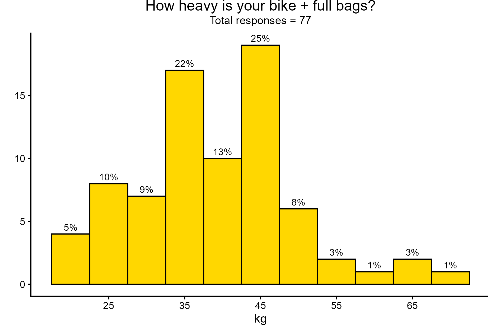
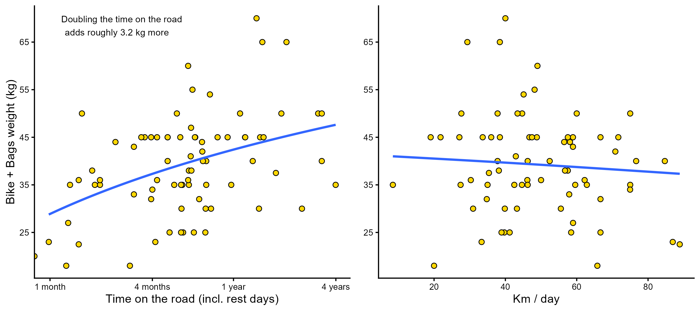

This section summarizes the equipment choices of participants. We investigated bicycle types, luggage systems, camping gear, and technical equipment used during long-distance bicycle trips.
There are two peaks when it comes to the combined weight of the bicycle and luggage. Most participants carried approximately 45 kg, while another large group carried around 35 kg. The lightest setup weighed 18 kg, whereas the heaviest reached 70 kg.

Participants travelling for longer periods generally carried more luggage—about 3 kg more whenever trip length doubled. Despite this, total bicycle and luggage weight had only a small effect on average cycling speed. On average, participants travelled only 0.2 km/day faster for each kilogram less weight.
